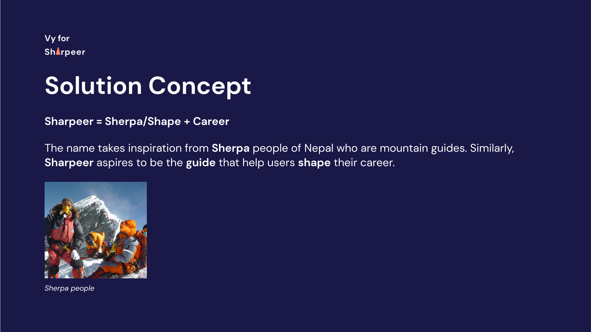
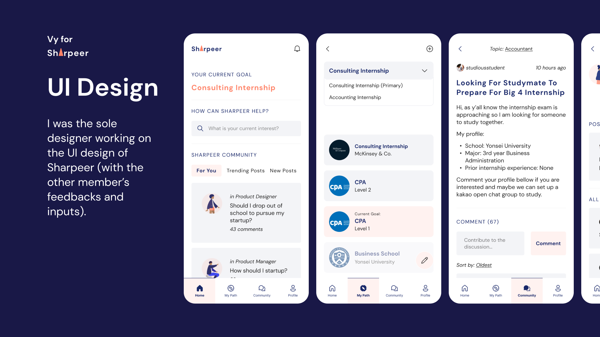
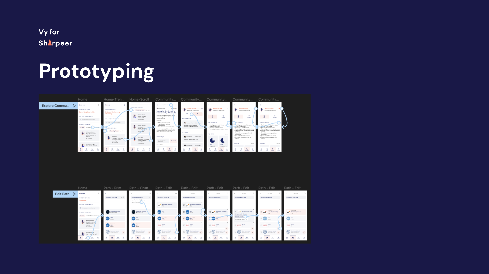

Sharpeer is a project I did as part of my bachelor's degree in Creative Technology Management to solve a problem for fellow students in my program. Creative Technology Management offers an interdisciplinary education intersecting Design, Technology and Management. Sometimes, the various possibilities offered by this major causes students in the program some confusion on what career to pursue and how to pursue it.
I then set out to conduct more interviews with the aforementioned internal users to understand more of their difficulties when using the company's website. Besides qualitative data, I also consulted the website's traffic information, ads metrics and lead data to understand the general patterns of usage: where users come from, what type of devices users use, what users do on the websites, …
We then work on creating a solution that would address the Problem Statement defined above. Only then, the team was officially named Sharpeer, which comes from a combination of Sherpa/Shape and Career. Specifically, Sherpa people are mountain guides from Nepal. Similarly, Sharpeer aspires to be the guide that help young adults conquer the the task of shaping their career.
Sharpeer aims to reflect a professional look to establish trust because career planning can have life-changing effects on individuals’ life. Considering the age of our target users, Sharpeer should also have a friendly image to appeal to young audience as well as avoid the stress usually associated to career planning.
To convey a professional and trustable look, Sharpeer chose navy as the primary color. This color resembles those of prestigious and long-standing institutions from both the academic and professional worlds such as Yale University, Columbia University, IBM, Boeing, ... which also represents the transition of the students from academic to professional world. To reflect a friendly and refreshing look, Sharpeer incorporates orange as a complimentary color which is not too aggressive and works harmoniously with navy.
Based on the research on what users need to plan and accomplish their career goal, the team came up with three major features for Sharpeer:
As we aim to provide a solution that can provide close guidance in each step of the student's path to their future career, Sharpeer allows the users to plan each potential career paths with concrete steps that they need to accomplish to pursue each. Such steps usually involve gaining expertise in relevant areas and getting certification of tests to display their competency - the milestones that they need to accomplish to build a specific career. Alongside with user interview results, I conducted desk research on the necessary milestones such as certification, tests and their structure for this feature. I was then responsible for developing a cohesive Information Architecture for Sharpeer that ties together the various features and information included in the app.
The team then proceeded with the UI design of the Sharpeer app with me being the sole UI designer (with the other member's feedbacks and inputs).
I also created prototype of the app in two specific scenarios to demonstrate the app concept to others.
Vy majors in Creative Technology Management so there are many available career paths for her. She surfs Sharpeer to find ideas of possible career path and recently became interested in becoming an Accountant. You can find a video of the prototype in this scenario below:
You can also try the prototype directly by clicking here. Note: Only the flow as shown in the video is functional.
Minsung wants to modify his path to get an Accounting Internship on Sharpeer. He recently passed the CPA level 1 exam and decided to not take the CPA level 2. Therefore, he opens his Accounting Internship Path to remove the CPA level 2 milestone and and marks CPA level 1 milestone as done. You can find a video of the prototype in this scenario below:
You can also try the prototype directly by clicking here. Note: Only the flow as shown in the video is functional.